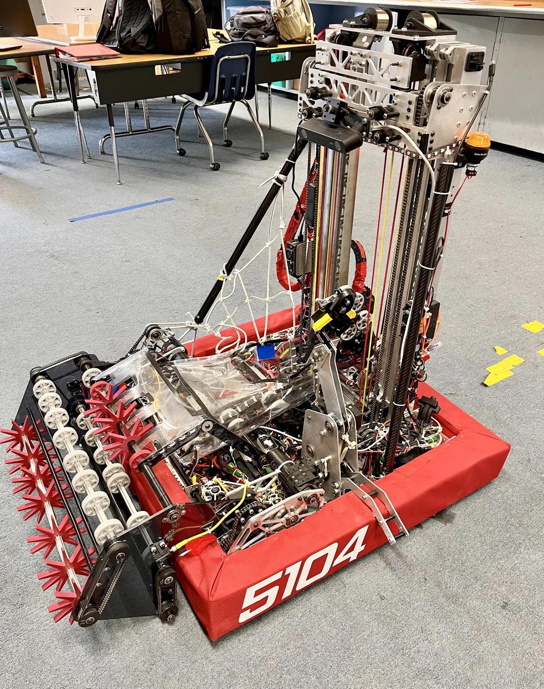

Leviathan
FIRST Robotics Competition: Reefscape
My Role
Co-Captain, CAD & Manufacturing Lead, and Drive Coach. I designed the elevator and initial coral/algae end effector, led mechanical integration across 5 subteams and 35 members, and led the robot-wide weight reduction.

We built the team's most technically complex robot, with all four reef scoring levels and mostly autonomous operation, including during teleop.
My work and results
- 3-stage cascade elevator with 9.5 ft of travel, two Kraken X60 motors, and a 1:5 reduction
- Constant force spring assist: extension time fell from about 3.5 seconds to 1.8 s; the programming subteam retuned the closed-loop control, with no loss in retraction speed
- Main scoring-cycle bottleneck reduced, with an estimated 25% more scoring cycles
- 134 lb against a 115 lb limit at first; the team's robot reached 114 lb, a 20 lb reduction (15%)
- Aluminum elevator structure pocketed and aluminum brackets replaced with 3D printed carbon fiber
- End effector made smaller and lighter for better game-piece retention and handoff from the intake funnel
- Shared Google Docs build schedule across mechanical, programming, electrical, CAD, and manufacturing
- Pre-match and in-match strategy with the alliance's other two drive coaches
Team systems
- 4 localization cameras, a ZED stereo camera, and 5 coprocessors
- SDS swerve drive
Awards
- Judges' Award: Pinnacles Regional
- Gracious Professionalism Award: San Francisco Regional
- Innovation in Control Award: Contra Costa Regional
- Industrial Design Award: NorCal Invitational